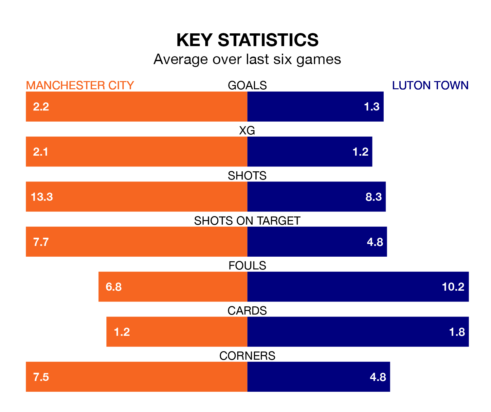

Manchester City host Luton Town in Saturday's match at the Etihad Stadium looking to bounce back from defeat last time out in the Premier League.
The Citizens, who sit third in the league after 31 games, fell to a 2-4 away defeat to Crystal Palace on April 6.
They face a Luton side who picked up a win in their last match, a 2-1 victory against AFC Bournemouth, and who sit 18th in the table.
With 71 goals in 31 games so far this season, City are the league's third-highest scorers with 2.3 goals per game. And they are conceding fewer than average, letting in 31 goals at a rate of 1.0 per game.
Luton, meanwhile, are below average scorers, with 1.4 goals per game, compared to a league average of 1.6. They have conceded 2.0 goals per game.
In Erling Haaland, the Citizens have the league's most on-form striker so far this season. He has notched 19 goals in 25 appearances.
Town's top scorers, with nine goals each, are Elijah Adebayo and Carlton Morris.
The hosts are in good form in the Premier League, with four wins and two draws from their last six games.
With a win and two draws over that period, the Hatters' form is much worse – they have taken five points from 18, compared to City's 14.
Over the last two years, City and Luton have played each other twice. City won both of them.
Their last meeting was on February 27, when City won 6-2 away.
Updated: 11:20 (UTC), 09/04/24